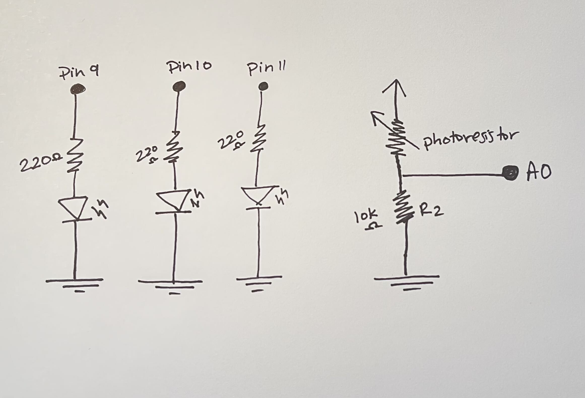

Introduction
For Assignment 3, I built a circuit incorporating a photoresistor as a sensor and multiple LEDs as output devices. The circuit uses a voltage divider to read light levels, and the brightness of the LEDs dynamically changes based on the ambient light intensity. This project demonstrates how analog inputs can be mapped to control multiple outputs, creating an interactive display.
Hardware
The hardware setup includes:
- An Arduino Uno
- Three LEDs (red, yellow, green) connected to pins 9, 10, and 11
- A photoresistor in a voltage divider circuit
- A fixed 10kΩ resistor for the voltage divider
- 220Ω resistors for the LEDs
- A breadboard and jumper wires for connections
Resistor Calculations
LED Resistors (220Ω):
Calculated using Ohm’s Law:
R = (VA - VL) / I
Where:
VA = 5V(Arduino voltage)VL = 1.8V(forward voltage for red, yellow, and green LEDs)I = 20mA = 0.02A(desired current)
Substituting values:
R = (5 - 1.8) / 0.02 = 160Ω
A 220Ω resistor was chosen for each LED (rounded to the nearest standard value) to ensure safe operation and limit current.
Voltage Divider Resistor (10kΩ):
The voltage divider consists of:
- A photoresistor (variable resistance based on light)
- A 10kΩ fixed resistor
This combination provides an appropriate voltage range for the Arduino's analog input (0–5V) when reading varying light conditions. The 10kΩ resistor was chosen because it balances the typical resistance range of the photoresistor (1kΩ–10kΩ).
Schematic
Circuit

Arduino Code
const int ldrPin = A0; // LDR connected to A0
const int led1 = 9; // Red LED to pin 9
const int led2 = 10; // Yellow LED to pin 10
const int led3 = 11; // Green LED to pin 11
// the setup routine runs once when you press reset:
void setup() {
Serial.begin(9600); // Initialize serial communication
pinMode(led1, OUTPUT); // Set pin 9 (red LED) as an output
pinMode(led2, OUTPUT); // Set pin 10 (yellow LED) as an output
pinMode(led3, OUTPUT); // Set pin 11 (green LED) as an output
}
void loop() {
int lightValue = analogRead(ldrPin); // Read LDR value
// Map lightValue to appropriate brightness levels for LEDs
int brightness1 = map(lightValue, 100, 500, 0, 85); // Map for the dim range
int brightness2 = map(lightValue, 100, 500, 86, 170); // Map for the medium range
int brightness3 = map(lightValue, 100, 500, 171, 255); // Map for the bright range
// if-statements to control LEDs
if (lightValue < 200) { // Dim light
analogWrite(led1, brightness1); // Set red LED brightness for dim light
analogWrite(led2, brightness1); // Set yellow LED brightness for dim light
analogWrite(led3, brightness1); // Set green LED brightness for dim light
} else if (lightValue < 400) { // Medium light
analogWrite(led1, brightness2); // Set red LED brightness for medium light
analogWrite(led2, brightness2); // Set yellow LED brightness for medium light
analogWrite(led3, brightness2); // Set green LED brightness for medium light
} else { // Bright light
analogWrite(led1, brightness3); // Set red LED brightness for bright light
analogWrite(led2, brightness3); // Set yellow LED brightness for bright light
analogWrite(led3, brightness3); // Set green LED brightness for bright light
}
// Print the light intensity value to the serial monitor
Serial.print("Light Value: "); // Print label
Serial.println(lightValue); // Print the current light intensity value
delay(100); // Short delay (100ms) before reading again
}
Final Product!

Questions & Answers
1. Can the Variable Resistor Be Either R1 or R2?
Yes, the variable resistor can be either R1 or R2, but the behavior changes depending on its position in the voltage divider:
2. Graph

3. 10-bit PWM and a 16-bit analog-to-digital converter instead
If AnalogWrite is upgraded to 10-bit (0–1023) and AnalogRead to 16-bit (0–65,535), the map() function must be updated as follows:
mappedValue = map(inputValue, 0, 65535, 0, 1023);This change scales the 16-bit input to the 10-bit output, accommodating the increased resolution. The result is a circuit with greater precision for both sensing and output control.